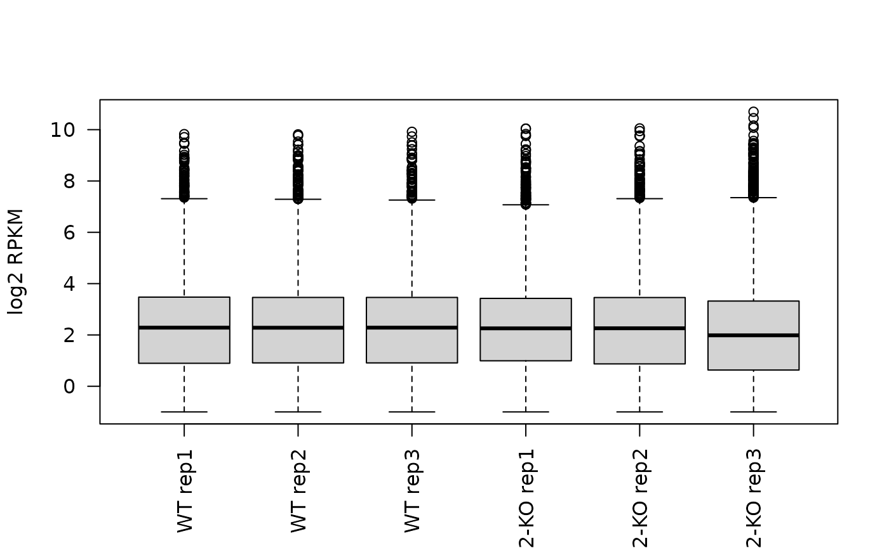

BasicChecks.RmdSetup
library(BioPlex)
library(AnnotationDbi)
library(AnnotationHub)
library(ExpressionAtlas)
library(graph)Connect to AnnotationHub:
ah <- AnnotationHub::AnnotationHub()Connect to ExperimentHub:
eh <- ExperimentHub::ExperimentHub()OrgDb package for human:
## OrgDb object:
## | DBSCHEMAVERSION: 2.1
## | Db type: OrgDb
## | Supporting package: AnnotationDbi
## | DBSCHEMA: HUMAN_DB
## | ORGANISM: Homo sapiens
## | SPECIES: Human
## | EGSOURCEDATE: 2021-Apr14
## | EGSOURCENAME: Entrez Gene
## | EGSOURCEURL: ftp://ftp.ncbi.nlm.nih.gov/gene/DATA
## | CENTRALID: EG
## | TAXID: 9606
## | GOSOURCENAME: Gene Ontology
## | GOSOURCEURL: http://current.geneontology.org/ontology/go-basic.obo
## | GOSOURCEDATE: 2021-02-01
## | GOEGSOURCEDATE: 2021-Apr14
## | GOEGSOURCENAME: Entrez Gene
## | GOEGSOURCEURL: ftp://ftp.ncbi.nlm.nih.gov/gene/DATA
## | KEGGSOURCENAME: KEGG GENOME
## | KEGGSOURCEURL: ftp://ftp.genome.jp/pub/kegg/genomes
## | KEGGSOURCEDATE: 2011-Mar15
## | GPSOURCENAME: UCSC Genome Bioinformatics (Homo sapiens)
## | GPSOURCEURL:
## | GPSOURCEDATE: 2021-Feb16
## | ENSOURCEDATE: 2021-Feb16
## | ENSOURCENAME: Ensembl
## | ENSOURCEURL: ftp://ftp.ensembl.org/pub/current_fasta
## | UPSOURCENAME: Uniprot
## | UPSOURCEURL: http://www.UniProt.org/
## | UPSOURCEDATE: Mon Apr 26 21:53:12 2021
keytypes(orgdb)## [1] "ACCNUM" "ALIAS" "ENSEMBL" "ENSEMBLPROT" "ENSEMBLTRANS"
## [6] "ENTREZID" "ENZYME" "EVIDENCE" "EVIDENCEALL" "GENENAME"
## [11] "GENETYPE" "GO" "GOALL" "IPI" "MAP"
## [16] "OMIM" "ONTOLOGY" "ONTOLOGYALL" "PATH" "PFAM"
## [21] "PMID" "PROSITE" "REFSEQ" "SYMBOL" "UCSCKG"
## [26] "UNIPROT"Check: identify CORUM complexes that have a subunit of interest
Get core set of complexes:
core <- getCorum(set = "core", organism = "Human")## Using cached version from 2021-06-09 17:04:52Turn the CORUM complexes into a list of graph instances, where all nodes of a complex are connected to all other nodes of that complex with undirected edges.
core.glist <- corum2graphlist(core, subunit.id.type = "UNIPROT")Identify complexes that have a subunit of interest:
has.cdk2 <- hasSubunit(core.glist,
subunit = "CDK2",
id.type = "SYMBOL")Check the answer:
table(has.cdk2)## has.cdk2
## FALSE TRUE
## 2408 9
cdk2.glist <- core.glist[has.cdk2]
lapply(cdk2.glist, function(g) unlist(graph::nodeData(g, attr = "SYMBOL")))## $CORUM311_Cell_cycle_kinase_complex_CDK2
## P12004 P24385 P24941 P38936
## "PCNA" "CCND1" "CDK2" "CDKN1A"
##
## $`CORUM1003_RC_complex_(Replication_competent_complex)`
## P09884 P20248 P24941 P35249 P35250 P35251 P40937 P40938 Q14181
## "POLA1" "CCNA2" "CDK2" "RFC4" "RFC2" "RFC1" "RFC5" "RFC3" "POLA2"
##
## $`CORUM1004_RC_complex_during_S-phase_of_cell_cycle`
## P09874 P09884 P11387 P15927 P18858 P20248 P24941 P27694 P28340 P35244
## "PARP1" "POLA1" "TOP1" "RPA2" "LIG1" "CCNA2" "CDK2" "RPA1" "POLD1" "RPA3"
## P35250 P35251 Q07864
## "RFC2" "RFC1" "POLE"
##
## $`CORUM1656_p27-cyclinE-CDK2_complex`
## P24864 P24941 P46527
## "CCNE1" "CDK2" "CDKN1B"
##
## $`CORUM3015_p27-cyclinE-Cdk2_-_Ubiquitin_E3_ligase_(SKP1A,_SKP2,_CUL1,_CKS1B,_RBX1)_complex`
## P24864 P24941 P46527 P61024 P62877 P63208 Q13309 Q13616
## "CCNE1" "CDK2" "CDKN1B" "CKS1B" "RBX1" "SKP1" "SKP2" "CUL1"
##
## $`CORUM5556_CDK2-CCNA2_complex`
## P20248 P24941
## "CCNA2" "CDK2"
##
## $`CORUM5559_CDC2-CCNA2-CDK2_complex`
## P06493 P20248 P24941
## "CDK1" "CCNA2" "CDK2"
##
## $`CORUM5560_CDK2-CCNE1_complex`
## P24864 P24941
## "CCNE1" "CDK2"
##
## $`CORUM6589_E2F-1-DP-1-cyclinA-CDK2_complex`
## P24941 P78396 Q01094 Q14186
## "CDK2" "CCNA1" "E2F1" "TFDP1"We can then also inspect the graph with plotting utilities from the Rgraphviz package:
plot(cdk2.glist[[1]], main = cdk2.glist[[1]]@graphData$ComplexName)Check: extract BioPlex PPIs for a CORUM complex
Get the latest version of the 293T PPI network:
bp.293t <- getBioPlex(cell.line = "293T", version = "3.0")## Using cached version from 2021-06-09 17:04:57Turn the BioPlex PPI network into one big graph where bait and prey relationship are represented by directed edges from bait to prey.
bp.gr <- bioplex2graph(bp.293t)Now we can also easily pull out a BioPlex subnetwork for a CORUM complex of interest:
## A graphNEL graph with directed edges
## Number of Nodes = 4
## Number of Edges = 5Check: expressed genes are showing up as prey (293T cells)
Get RNA-seq data for HEK293 cells from GEO: GSE122425
se <- getGSE122425()## Using cached version from 2021-06-09 17:05:09
se## class: SummarizedExperiment
## dim: 57905 6
## metadata(0):
## assays(2): raw rpkm
## rownames(57905): ENSG00000223972 ENSG00000227232 ... ENSG00000231514
## ENSG00000235857
## rowData names(4): SYMBOL KO GO length
## colnames(6): GSM3466389 GSM3466390 ... GSM3466393 GSM3466394
## colData names(41): title geo_accession ... passages.ch1 strain.ch1Inspect expression of prey genes:
## [1] 8995## [1] 10419
ind <- match(prey, rowData(se)$SYMBOL)
par(las = 2)
boxplot(log2(assay(se, "rpkm") + 0.5)[ind,],
names = se$title,
ylab = "log2 RPKM")
How many prey genes are expressed (raw read count > 0) in all 3 WT reps:
# background: how many genes in total are expressed in all three WT reps
gr0 <- rowSums(assay(se)[,1:3] > 0)
table(gr0 == 3)##
## FALSE TRUE
## 33842 24063
# prey: expressed in all three WT reps
table(gr0[ind] == 3)##
## FALSE TRUE
## 599 9346
# prey: expressed in at least one WT rep
table(gr0[ind] > 0)##
## FALSE TRUE
## 305 9640Are prey genes overrepresented in the expressed genes?
exprTable <-
matrix(c(9346, 1076, 14717, 32766),
nrow = 2,
dimnames = list(c("Expressed", "Not.expressed"),
c("In.prey.set", "Not.in.prey.set")))
exprTable## In.prey.set Not.in.prey.set
## Expressed 9346 14717
## Not.expressed 1076 32766Test using hypergeometric test (i.e. one-sided Fisher’s exact test):
fisher.test(exprTable, alternative = "greater")##
## Fisher's Exact Test for Count Data
##
## data: exprTable
## p-value < 2.2e-16
## alternative hypothesis: true odds ratio is greater than 1
## 95 percent confidence interval:
## 18.29105 Inf
## sample estimates:
## odds ratio
## 19.34726Alternatively: permutation test, i.e. repeatedly sample number of prey genes from the background, and assess how often we have as many or more than 9346 genes expressed:
permgr0 <- function(gr0, nr.genes = length(prey))
{
ind <- sample(seq_along(gr0), nr.genes)
sum(gr0[ind] == 3)
}## Min. 1st Qu. Median Mean 3rd Qu. Max.
## 1000 1000 1000 1000 1000 1000
(sum(perms >= 9346) + 1) / 1001## [1] 0.000999001Check: is there a relationship between prey frequency and prey expression level?
Check which genes turn up most frequently as prey:
prey.freq <- sort(table(bp.293t$SymbolB), decreasing = TRUE)
preys <- names(prey.freq)
prey.freq <- as.vector(prey.freq)
names(prey.freq) <- preys
head(prey.freq)## HSPA5 HSPA8 TUBB8 UBB YBX1 YWHAH
## 199 192 176 173 139 132
summary(prey.freq)## Min. 1st Qu. Median Mean 3rd Qu. Max.
## 1.00 2.00 6.00 11.34 16.00 199.00
hist(prey.freq, breaks = 50, main = "", xlab = "Number of PPIs", ylab = "Number of genes")
Prey genes are involved 11 PPIs on average.
There doesn’t seem to be a strong correlation between expression level and the frequency of gene to turn up as prey:
ind <- match(names(prey.freq), rowData(se)$SYMBOL)
rmeans <- rowMeans(assay(se, "rpkm")[ind, 1:3])
log.rmeans <- log2(rmeans + 0.5)
par(pch = 20)
plot( x = prey.freq,
y = log.rmeans,
xlab = "prey frequency",
ylab = "log2 RPKM")
cor(prey.freq,
log.rmeans,
use = "pairwise.complete.obs")## [1] 0.2035977Check: expressed genes are showing up as prey (HCT116 cells)
Get the latest version of the HCT116 PPI network:
bp.hct116 <- getBioPlex(cell.line = "HCT116", version = "1.0")## Using cached version from 2021-06-09 17:05:12
head(bp.hct116)## GeneA GeneB UniprotA UniprotB SymbolA SymbolB pW pNI
## 1 88455 50649 Q8IZ07 Q9NR80-4 ANKRD13A ARHGEF4 3.959215e-04 3.298003e-05
## 2 88455 115106 Q8IZ07 Q96CS2 ANKRD13A HAUS1 4.488473e-02 1.934731e-03
## 3 88455 23086 Q8IZ07 Q8NEV8-2 ANKRD13A EXPH5 7.402394e-05 9.296226e-04
## 4 88455 54930 Q8IZ07 Q9H6D7 ANKRD13A HAUS4 9.180959e-07 1.278318e-04
## 5 88455 79441 Q8IZ07 Q68CZ6 ANKRD13A HAUS3 8.709394e-07 1.495480e-03
## 6 88455 93323 Q8IZ07 Q9BT25-2 ANKRD13A HAUS8 9.147659e-06 2.061483e-03
## pInt
## 1 0.9995711
## 2 0.9531805
## 3 0.9989964
## 4 0.9998713
## 5 0.9985036
## 6 0.9979294Get RNA-seq data for 934 cancer cell lines (incl. HCT116) from the Cancer Cell Line Encyclopedia as available from the ArrayExpress-ExpressionAtlas (Accession: E-MTAB-2770)
atlasRes <- ExpressionAtlas::searchAtlasExperiments(
properties = "Cancer Cell Line Encyclopedia",
species = "human" )## Searching for Expression Atlas experiments matching your query ...## Query successful.## Found 1 experiments matching your query.
atlasRes## DataFrame with 1 row and 4 columns
## Accession Species Type Title
## <character> <character> <character> <character>
## 1 E-MTAB-2770 Homo sapiens RNA-seq of coding RNA RNA-seq of 934 human..
ccle <- ExpressionAtlas::getAtlasData(atlasRes$Accession)## Downloading Expression Atlas experiment summary from:
## ftp://ftp.ebi.ac.uk/pub/databases/microarray/data/atlas/experiments/E-MTAB-2770/E-MTAB-2770-atlasExperimentSummary.Rdata## Successfully downloaded experiment summary object for E-MTAB-2770
ccle <- ccle$`E-MTAB-2770`$rnaseq
ccle## class: RangedSummarizedExperiment
## dim: 65217 934
## metadata(4): pipeline filtering mapping quantification
## assays(1): counts
## rownames(65217): ENSG00000000003 ENSG00000000005 ... ENSG00000281921
## ENSG00000281922
## rowData names(0):
## colnames(934): run_22Rv1.2 run_23132_87.2 ... run_ZR_75_1.1
## run_ZR_75_30.1
## colData names(4): AtlasAssayGroup organism cell_line diseaseGet RNA-seq data of 675 commonly used human cancer cell lines (incl. HCT116) from Klijn et al., 2015 as available from the ArrayExpress-ExpressionAtlas (Accession: E-MTAB-2706)
klijn <- ExpressionAtlas::getAtlasData("E-MTAB-2706")## Downloading Expression Atlas experiment summary from:
## ftp://ftp.ebi.ac.uk/pub/databases/microarray/data/atlas/experiments/E-MTAB-2706/E-MTAB-2706-atlasExperimentSummary.Rdata## Successfully downloaded experiment summary object for E-MTAB-2706
klijn <- klijn$`E-MTAB-2706`$rnaseq
klijn## class: RangedSummarizedExperiment
## dim: 65217 622
## metadata(4): pipeline filtering mapping quantification
## assays(1): counts
## rownames(65217): ENSG00000000003 ENSG00000000005 ... ENSG00000281921
## ENSG00000281922
## rowData names(0):
## colnames(622): ERR413347 ERR413348 ... ERR414020 ERR415514
## colData names(12): AtlasAssayGroup organism ... media freeze_mediaSanity check that the expressed genes are showing up as prey:
## [1] 4866## [1] 7903Map prey to ENSEMBL gene IDs:
prey <- AnnotationDbi::mapIds(orgdb,
keytype = "ENTREZID",
column = "ENSEMBL",
keys = as.character(prey))## 'select()' returned 1:many mapping between keys and columnsCombine HCT-116 transcriptome from CCLE and Klijn et al. datasets:
ind1 <- grep("HCT 116", ccle$cell_line)
ind2 <- grep("HCT 116", klijn$cell_line)
emat <- cbind(assay(ccle)[,ind1], assay(klijn)[,ind2])
colnames(emat) <- c("ccle", "klijn")
head(emat)## ccle klijn
## ENSG00000000003 2471 1876
## ENSG00000000005 0 0
## ENSG00000000419 4082 3731
## ENSG00000000457 1160 676
## ENSG00000000460 1785 1206
## ENSG00000000938 0 0The CCLE and Klijn et al. measurements correlate very well:
cor(emat[,"ccle"], emat[,"klijn"])## [1] 0.9246789How many prey genes are expressed (raw read count > 0) in both CCLE and Klijn et al.?
# background: how many genes in total are expressed in both measurements
gr0 <- rowSums(emat > 0)
table(gr0 == 2)##
## FALSE TRUE
## 38752 26465
# prey: expressed in both measurements
table(gr0[ind.prey] == 2)##
## FALSE TRUE
## 310 7553
# prey: expressed in at least one measurement
table(gr0[ind.prey] > 0)##
## FALSE TRUE
## 178 7685Check: Proteome data
Get the CCLE proteome data from ExperimentHub:
## snapshotDate(): 2021-05-18## see ?depmap and browseVignettes('depmap') for documentation## loading from cache
ccle.prot <- as.data.frame(ccle.prot)Turn into a SummarizedExperiment for convenience (we can restrict this to selected cell lines, but here we keep all cell lines):
se <- ccleProteome2SummarizedExperiment(ccle.prot, cell.line = NULL)
assay(se)[1:5, "HCT116"]## P55011 P35453 O60341 O00570 P48431
## -0.2422502 NA -0.1941110 NA -1.5306584Get the relative protein expression data comparing 293T and HCT116 cells from Supplementary Table S4 (will be published with the upcoming BioPlex 3 paper):
bp.prot <- getBioplexProteome()## Using cached version from 2021-06-09 17:06:44
bp.prot## class: SummarizedExperiment
## dim: 9604 10
## metadata(0):
## assays(1): exprs
## rownames(9604): P0CG40 Q8IXZ3-4 ... Q9H3S5 Q8WYQ3
## rowData names(5): ENTREZID SYMBOL nr.peptides log2ratio adj.pvalue
## colnames(10): HCT1 HCT2 ... HEK4 HEK5
## colData names(1): cell.line
rowData(bp.prot)## DataFrame with 9604 rows and 5 columns
## ENTREZID SYMBOL nr.peptides log2ratio adj.pvalue
## <character> <character> <integer> <numeric> <numeric>
## P0CG40 100131390 SP9 1 -2.819071 6.66209e-08
## Q8IXZ3-4 221833 SP8 3 -3.419888 6.94973e-07
## P55011 6558 SLC12A2 4 0.612380 4.85602e-06
## O60341 23028 KDM1A 7 -0.319695 5.08667e-04
## O14654 8471 IRS4 4 -5.951096 1.45902e-06
## ... ... ... ... ... ...
## Q9H6X4 80194 TMEM134 2 -0.379342 7.67195e-05
## Q9BS91 55032 SLC35A5 1 -2.237634 8.75523e-05
## Q9UKJ5 26511 CHIC2 1 -0.614932 1.78756e-03
## Q9H3S5 93183 PIGM 1 -1.011397 8.91589e-06
## Q8WYQ3 400916 CHCHD10 1 0.743852 1.17163e-03A couple of quick sanity checks:
log2ratio is just the mean of the five HEK samples, divided by the mean of the five HCT samples (and then taking log2 of it):
## P0CG40 Q8IXZ3-4 P55011 O60341 O14654
## -2.8190710 -3.4198879 0.6123799 -0.3196953 -5.9510960SessionInfo
## R version 4.1.0 (2021-05-18)
## Platform: x86_64-pc-linux-gnu (64-bit)
## Running under: Ubuntu 20.04.2 LTS
##
## Matrix products: default
## BLAS/LAPACK: /usr/lib/x86_64-linux-gnu/openblas-pthread/libopenblasp-r0.3.8.so
##
## locale:
## [1] LC_CTYPE=en_US.UTF-8 LC_NUMERIC=C
## [3] LC_TIME=en_US.UTF-8 LC_COLLATE=en_US.UTF-8
## [5] LC_MONETARY=en_US.UTF-8 LC_MESSAGES=C
## [7] LC_PAPER=en_US.UTF-8 LC_NAME=C
## [9] LC_ADDRESS=C LC_TELEPHONE=C
## [11] LC_MEASUREMENT=en_US.UTF-8 LC_IDENTIFICATION=C
##
## attached base packages:
## [1] parallel stats4 stats graphics grDevices utils datasets
## [8] methods base
##
## other attached packages:
## [1] depmap_1.6.0 dplyr_1.0.6
## [3] graph_1.70.0 ExpressionAtlas_1.20.0
## [5] xml2_1.3.2 limma_3.48.0
## [7] AnnotationHub_3.0.0 BiocFileCache_2.0.0
## [9] dbplyr_2.1.1 AnnotationDbi_1.54.0
## [11] BioPlex_0.99.1 SummarizedExperiment_1.22.0
## [13] Biobase_2.52.0 GenomicRanges_1.44.0
## [15] GenomeInfoDb_1.28.0 IRanges_2.26.0
## [17] S4Vectors_0.30.0 BiocGenerics_0.38.0
## [19] MatrixGenerics_1.4.0 matrixStats_0.59.0
##
## loaded via a namespace (and not attached):
## [1] bitops_1.0-7 fs_1.5.0
## [3] bit64_4.0.5 filelock_1.0.2
## [5] httr_1.4.2 rprojroot_2.0.2
## [7] tools_4.1.0 bslib_0.2.5.1
## [9] utf8_1.2.1 R6_2.5.0
## [11] DBI_1.1.1 withr_2.4.2
## [13] tidyselect_1.1.1 bit_4.0.4
## [15] curl_4.3.1 compiler_4.1.0
## [17] textshaping_0.3.4 desc_1.3.0
## [19] DelayedArray_0.18.0 sass_0.4.0
## [21] rappdirs_0.3.3 pkgdown_1.6.1
## [23] systemfonts_1.0.2 stringr_1.4.0
## [25] digest_0.6.27 rmarkdown_2.8
## [27] XVector_0.32.0 pkgconfig_2.0.3
## [29] htmltools_0.5.1.1 fastmap_1.1.0
## [31] highr_0.9 rlang_0.4.11
## [33] RSQLite_2.2.7 shiny_1.6.0
## [35] jquerylib_0.1.4 generics_0.1.0
## [37] jsonlite_1.7.2 RCurl_1.98-1.3
## [39] magrittr_2.0.1 GenomeInfoDbData_1.2.6
## [41] Matrix_1.3-3 Rcpp_1.0.6
## [43] fansi_0.5.0 lifecycle_1.0.0
## [45] stringi_1.6.2 yaml_2.2.1
## [47] zlibbioc_1.38.0 grid_4.1.0
## [49] blob_1.2.1 promises_1.2.0.1
## [51] ExperimentHub_2.0.0 crayon_1.4.1
## [53] lattice_0.20-44 Biostrings_2.60.1
## [55] KEGGREST_1.32.0 knitr_1.33
## [57] pillar_1.6.1 XML_3.99-0.6
## [59] glue_1.4.2 BiocVersion_3.13.1
## [61] evaluate_0.14 BiocManager_1.30.15
## [63] png_0.1-7 vctrs_0.3.8
## [65] httpuv_1.6.1 purrr_0.3.4
## [67] assertthat_0.2.1 cachem_1.0.5
## [69] xfun_0.23 mime_0.10
## [71] xtable_1.8-4 later_1.2.0
## [73] ragg_1.1.2 tibble_3.1.2
## [75] memoise_2.0.0 ellipsis_0.3.2
## [77] interactiveDisplayBase_1.30.0